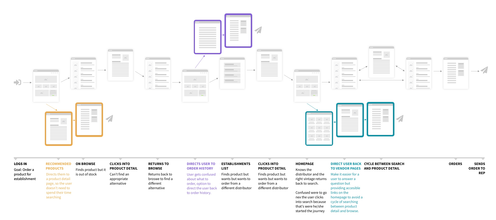

The problem
An aggregated marketplace with over 1M unique SKUs from 1K+ distributors. Buyers (establishments with valid liquor licenses) search the marketplace and create orders to send to their distributor partners.
Of all monthly active buyers, fewer than 10% were using the ordering tool. My goal was to understand the friction and propose design changes to improve the ordering experience.
The solutionA redesigned cart to help buyers more easily navigate, update, and send orders to distributor partners.
Team & role
The team
- 1 marketer
- 1 dev
- 1 senior product designer 👋
User research
- Conducting user interviews
- Surveying users
- Mapping user journey
- Market research
Designing
- Wireframing
- Information architecturing
- High-fidelity mockups
- Prototyping
Product strategy
- Project breakdown
Background
I started by collecting and analyzing past research, looking for gaps in our understanding of the problem. From there I ran stakeholder interviews, surveyed 133 buyers, interviewed 8+ current customers, and researched the competitive landscape.
Buyer’s journey
The most interesting finding came from analyzing a buyer’s path to placing an order. Where were they dropping off? Where were they getting confused? The takeaways led to reorganizing the flow of information and adding helpful reminders throughout the journey.

Get the full story
Get the full list of takeaways that led to the redesign, and an in-depth look at the pitfalls and successes it took to bring it to market. The full, unedited case study is available on request.